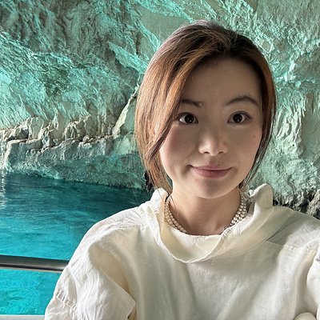
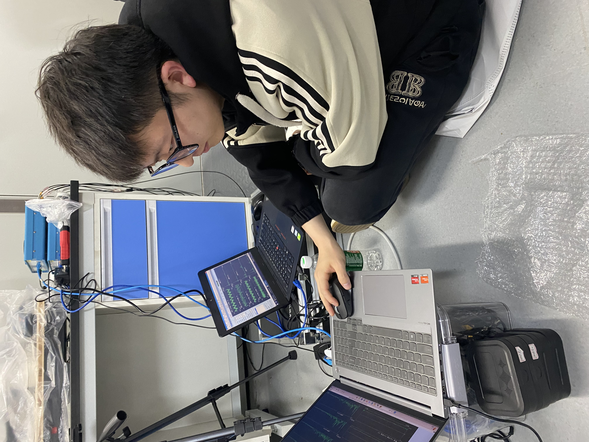
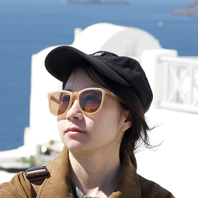
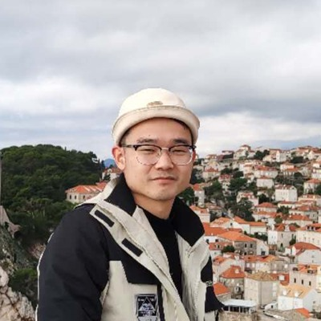
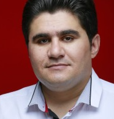

NDT & SHM Group
Group Members
University of Groningen · ENTEG
- PhD researchers
- 11
- Visiting researchers
- 4
- Master students
- 3
Principal Investigator
Research Staff
Support Staff
PhD Students
11 researchersClint (Xiaodong) Han
PhD student
Predictive maintenance and condition monitoring of railway track systems.

Yanxin Si
PhD student
System identification, data-driven modelling, and modal analysis of complex engineering systems.
Eddie (Hailong) Liu
PhD student
Physics-informed neural networks for structural health monitoring and dynamic response prediction.
Kun Xie
PhD student
Camera-based structural vibration measurement, motion magnification, and full-field dynamic analysis.
Kamiel Politiek
PhD student
Nonlinear ultrasonic resonance testing for quality assessment of metal additive manufactured components.
Wenbo Zhang
PhD student
Nonlinear modal analysis and nonlinear data-driven modelling for complex structural dynamics.
Xiangyu Wang
PhD student
Advanced active thermography NDT for metals and composites.
Sijie Wang
PhD student
Hydrodynamic simulation of fish locomotion and behaviour using CFD and flow-structure interaction modelling.

Qingsheng Liu
PhD student
Camera-based motion analysis and vibration monitoring of wind turbine structures.

Jiayu Wang
PhD student
Drone-based structural health monitoring and autonomous inspection of engineering structures.
Yueqing Wang
PhD student
Computer vision, LiDAR-vision fusion, traffic and transportation engineering.
Visiting Researchers
4 members
Yifei Li
Visiting scholar, Huzhou Normal University, China
Machine learning and fault diagnosis, surrogate-assisted evolutionary optimization.
Jie Wang
Visiting PhD student, Hunan University, China
Quantum neural networks and vision transformers for fault diagnosis of mechanical bearing systems.
Lei Han
Visiting PhD student, Beijing Jiaotong University, China
Intelligent operation and maintenance of rail infrastructure, ground-penetrating radar, and machine learning.

Seyed Ahmad Taghizadeh
Visiting PhD student, Free University of Bozen-Bolzano, Italy
Deep learning-based infrared thermography for non-destructive testing of composite structures.
Current Master Students
3 studentsMarco Zekveld
Optimal lathing settings for contact lens manufacturing using ID-DMD.
Lena Boorsma
Nonlinear ultrasonic resonance testing for metallic AM parts.
Jannik Nirwing
Investigation of tool-cleaning effects on the quality of lathe-manufactured contact lenses.
Alumni
Our growing communityMaster Alumni
7- Yuval Swank2026
Ultrasonic resonance testing solution for metal additive manufacturing parts.
- Rick Hulleman2026
Nonlinear dynamic behavior study on high precision lathing machine.
- Mathijs Neerhof2026
Transfer learning and multi-signal fusion for automated tool wear classification in precision manufacturing.
- Dayon Benning2026
Stability lobe modeling for SPDT of contact lenses.
- Arjan van der Laan2025
Data-driven acoustic inspection of tool wear status.
- Stijn Eikens2025
Image acquisition in tool wear detection for the production of contact lenses.
- Justin de Groot2024
Computer vision-aided structural vibration tracking and analysis.
Bachelor Alumni
3- Filip Schultink2026
Hybrid predictive maintenance framework for a 2-DOF robotic arm.
- Huib van der Veen2024
Non-contact vision-based structural vibration measurements.
- Steven Boon2024
Experimental modal analysis of beam structures through data-driven modelling.